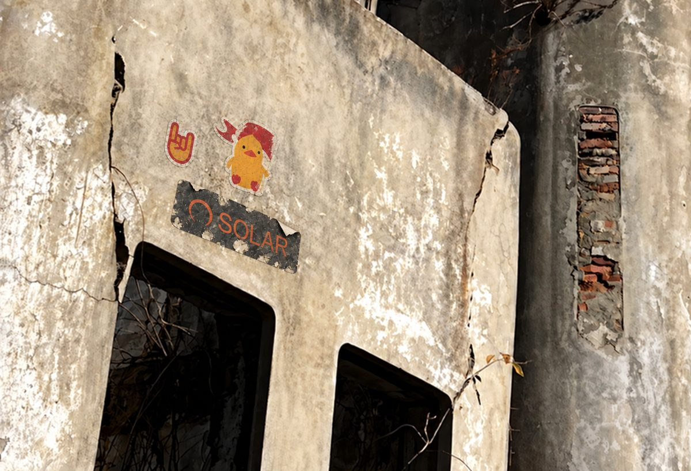

Challenge
We were given a snippet of a photo with stickers pasted over parts of it. The answer is the coordinates of where the photo was taken, and the description hints that the place is a castle.

Solution
The stickers throw off reverse image search, so I cropped the photo down to a region without any of them.
Yandex reverse image search on the cropped photo matched the Jankowski House (the Castle of Jan Jankowski), which sits at 42.605979° N, 131.177670° E.
That point is the building itself, not where the photographer stood. Going by the zoom, crop and viewing angle of the original shot, I moved the point back to where the camera would have been and landed on:
42.60585° N, 131.17785° ETakeaways
- Crop out anything pasted onto an image before reverse searching it, since stickers and overlays can wreck the match.
- Yandex is still the strongest engine for buildings and landscapes in Russia.
- The landmark's own coordinates are a starting point. The answer is where the camera was.